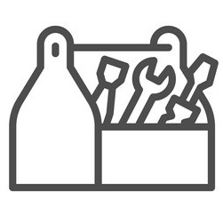
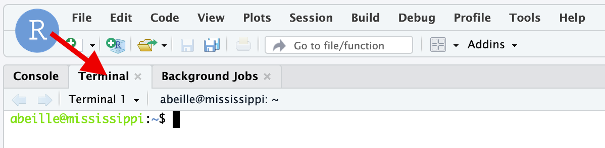
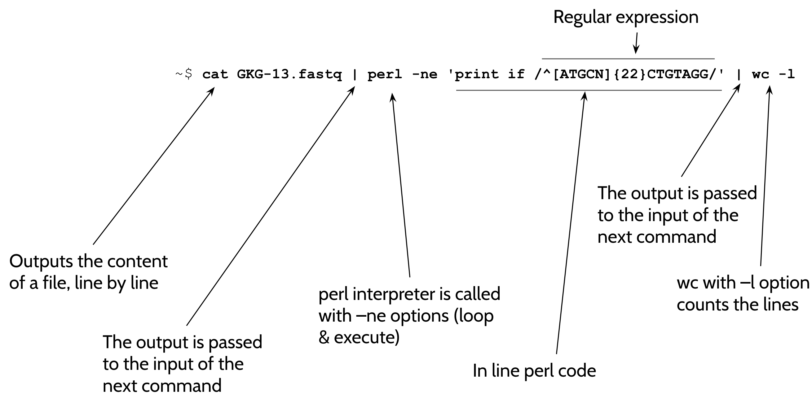

Pratical part: Command lines

1. SSH connection to a linux terminal in the analysis server¶
We are going to use an Rstudio server. As its name indicates, the primary purpose of Rstudio is to provide an interactive R console for R coding. However, the Rstudio server also provides a graphical interface to a LINUX terminal and this is this interface we are going to take advantage of !
 The students are split in two groups. One group will use a serveur deployed in the Google
cloud, whereas the other group will use a serveur deployed in the Jussieu campus.
The students are split in two groups. One group will use a serveur deployed in the Google
cloud, whereas the other group will use a serveur deployed in the Jussieu campus.
- First of all, visit this Page and reserve an account by putting you email adresse in the corresponding row.
Please only one account by student.
-
Once this is done, copy the server address indicated for your account and paste it in your web browser (in a new tab).
-
On the Rstudio login page, enter your login and your password
-
just click the
Terminaltab as shown below.

- Pull the central separation toward the right handside of the screen to enlarge your terminal.
Your are ready to work using command lines on your server !
You are connected to your home directory, which is also symbolised by ~.
Your "prompt" - the text just before the command typing area - is constructed as follows:
abeilleis the login, mississippi is the name of the machine,
and the path is ~, ie your home directory.
For the rest of the training, the commands will be always indicated in command
fields (the grey box with a copy/paste icon in the upper right corner), without the prompt.
2. Basic "navigation"¶
- Type (or copy and paste) in your terminal and press Enter.
What do you read ?
you see the full path of your current position in your file system. pwd stands for
print working directory
You should be in /home/<user name> !
- Type (or copy and paste) Enter
What do you read ?
the ls command print the elements in your current (working) directory.
you expect something very close to:
total 24
drwxr-xr-x 3 limace limace 4096 Dec 7 23:58 .
drwxr-xr-x 45 limace limace 4096 Dec 8 00:38 ..
-rw-r--r-- 1 limace limace 220 Feb 25 2020 .bash_logout
-rw-r--r-- 1 limace limace 3771 Feb 25 2020 .bashrc
drwx------ 2 limace limace 4096 Dec 7 23:58 .cache
-rw-r--r-- 1 limace limace 807 Feb 25 2020 .profile
ls in a certain way.
If you want to know the options available for a command, type:
You can also try: alone and see how it affects the output of the command.- Type (or Copy/Paste):
What have you done with this command ?
You have created a new directory bowtie_work in your home directory and, in the same
command (because of the &&) you have changed you directory to ~/bowtie_work
You can try the command pwd and confirm that you are in the /home/<yourlogin>/bowtie_work
directory.
- Type (or Copy/Paste):
the wget command
wget downloads files whose URL is indicated as argument.
After wget, just check the presence of two new files, dmel-all-chromosome-r6.54.fasta.gz
and GRH-103_R1.fastq.gz in your working directory, using the ll command.
- We need to uncompress the .gz files:
What is it doing ?
the GRH-103_R1.fastq.gz and dmel-all-chromosome-r6.54.fasta.gz files are compressed files
(format gzip), as indicated by their .gz extension.
The gunzip command has uncompressed the files to GRH-103_R1.fastq and
dmel-all-chromosome-r6.54.fasta, respectively.
You can verify it by typing
which should show:total 1545908
drwxr-xr-x 2 limace limace 4096 Dec 13 21:51 ./
drwxr-xr-x 6 limace limace 4096 Dec 13 21:49 ../
-rw-r--r-- 1 limace limace 1437054065 Dec 13 21:49 GRH-103_R1.fastq
-rw-r--r-- 1 limace limace 145942238 Dec 13 21:49 dmel-all-chromosome-r6.54.fasta
ll command is an alias to the ls -laF
command.
3. What is this fastq file containing ?¶
Type (or Copy/Paste):
What is doing the more command ?
It reads the file by chunks of your screen size. Each time you type the Space bar, you print the next chunk. To exit from this read mode, just press the Q key.
How is made a fastq file ?
@HWI-D00104:246:C5N47ANXX:8:1101:6009:2000 1:N:0:CATTTT <-- Header
NCTGATGTCGGTCACATGCTTGGTGGAATTCTCGGGTGCCAAGGAACTCC <-- Sequence
+ <-- Quality header
#<<BBFFFFFFFFFFFFFFFFFFFFFFFFFFFFFFBBFFFFFFFFFFFFF <-- Sequence Quality (ASCII encoded)
@HWI-D00104:246:C5N47ANXX:8:1101:1557:2014 1:N:0:CATTTT
NGCAAGATGAATACTCTAATGACATGGAATTCTCGGGTGCCAAGGAACTC
+
#</<</BBFB<<FFFFFFFFFFFF/BF//<FF/FFFFFF<FFFFFBFFFF
@HWI-D00104:246:C5N47ANXX:8:1101:1549:2052 1:N:0:CATTTT
NGCCGTGATCGTCTAGTGGTTAGGATGGAATTCTCGGGTGCCAAGGAACT
+
#<</B/</FFFBFFFFFFFFFFFFFBFF/FFFFFFFFFFBFFFFFFFFFF
+ which may contain or not
a copy of the header, and the last line for the quality of the base calling at each position,
encoded by an ASCII character.
4. How many sequence reads in my file ?¶
Type (or Copy/Paste):
the wc command
prints the number of newlines, words, and bytes for each file in argument (here, GRH-103_R1.fastq)
As you used the -l option, you only print the number of newlines in the
file.
And then... How many sequences in GKG-13.fastq ?
8 898 789, NOT 35 595 156, because each sequence read is encoded by 4 lines !
5. Are my sequence reads containing the adapter ?¶
This fastq file corresponds to the sequencing of a small RNA library, whose 3' adapter contains the sequence 5’-TGGAATTCTCGGGTGCCAAGTGGAAT-3’ Type (or Copy/Paste):
This should return:A lot of things to comment in the previous command !
catprint the total content of the file in argument- the sign | is important, we call it the
pipe. the|takes the output of the upstream command (herecat GRH-103_R1.fastq) and gives it as input to the downstream command (heregrep TGGAATT). grepprints the lines of the input (or of the argument if used without pipe) only if these lines contains the stringTGGAATT.- the second pipe
|sign sends the output of the grep command and counts the number of lines in this output.
Brillant isn't it ?
Why doing it simple when you can do it complicated ?¶
Yeah... As a matter of fact, you can obtain exactly the same information from GRH-103_R1.fastq
by typing (or copying and pasting) the command:
Here, the option -c is passed to grep to ask for only counting and not printing
the lines that contain the string pattern TGGAATT
Check it out !
We need a negative control¶
The implicit hypothesis in the previous computing was that the number of reads with 7-nucleotide string of the adapter sequence is closely reflecting the number of reads with the "real" adapter.
This seems reasonable since the probability to find by chance this 7-nucleotide string in a read that does not contain the adapter is approx. 1/ 4^7 = 6.103516e-05.
However, it is preferable to experiment a negative control.
To find the number of sequences containing the "random" 7-nucleotide sequence ATCTCCT, type:
If everything goes well, you should find 7 853.
You see that 7 853 divided by 8 829 013 total reads in the fastq file is 8.89e-04, which is not too far from our a priori assertion.
conclusion on the counting¶
We found 8 829 013 out of 8 898 789 with the adapter sequence, which corresponds to 99.2 % sequences with adapters. The library seems to be OK !
6. Advanced combinations of bash commands.¶
In a first example we are going to compute the number of reads that :
- are 22 nucleotides long
- and contain a 3' flanking adapter sequence
TGGAATT.
To do so, type:
You should obtain 988 421 as a result.
Why did we choose {22} in the previous example ?
22 nt is the major length of miRNAs...
And now, a figure to explain the complex above command (arguments have changed but the syntax is the same):

Toward adapter soft clipping¶
Before moving on in the analysis, we will have to remove the adapter sequences from the read sequences. Let's first execute this command:
What is showing the output of this command ?
The read sequences containing the adapter (in first approximation)
And now, in a single command, let's generate a file, in fasta format, with the sequences which did contain the adapter sequence but whose this sequence was removed from the reads:
cat GRH-103_R1.fastq | perl -ne \
'if (/^([GATC]{18,})TGGAATT/){$count++; print ">$count\n"; print "$1\n"}' \
> clipped_GRH-103_R1.fasta
What is the character \ in the command "block" ?
It is a continuation mark: The shell is waiting for the command to be continued on the next line. If you don't get it, try to type and Enter the command:
... and if you are stuck, try Ctrl+C ;-)To observe to result of the previous command, type and Enter: